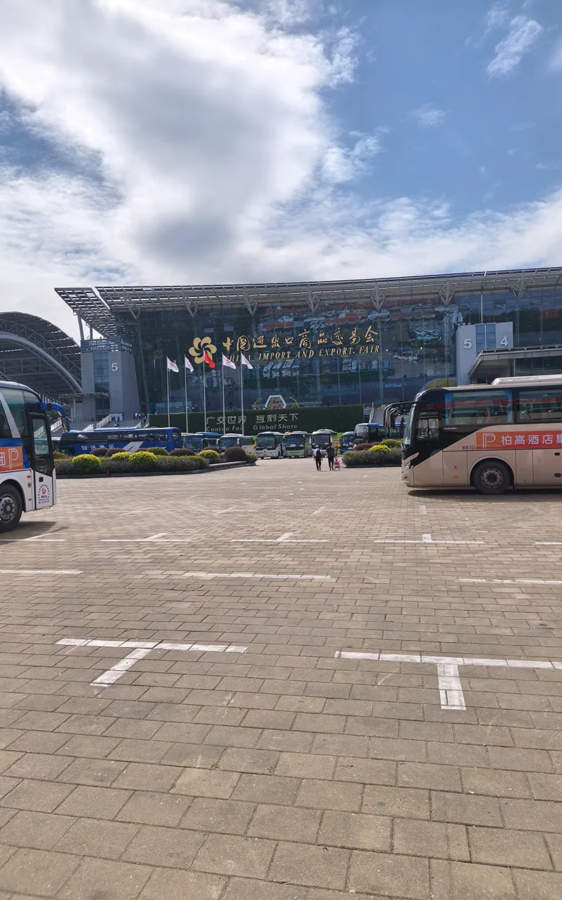

The 140th Canton Fair opens at the China Import and Export Fair Complex in Guangzhou on October 15, 2026, and it closes on November 4. Three phases, three weeks, and 54 exhibition zones under one roof make Canton Fair Autumn 2026 the largest sourcing event on any importer's calendar. Book a flight in late September and improvise the rest, and you will spend the first two days lost and the last two guessing which business card belongs to which booth.
I watch that gap close every session. Two sessions ago I met Nadia, a homeware importer from Toronto, at the Phase 2 entrance on day one. She had a badge, a suitcase, and six categories to cover in two days. By the second afternoon she had walked past most of her real targets, gathered 40 catalogs she could not attribute, and missed the two booths that matched her order size. We tried to rebuild her shortlist that evening from her photos and the fair app, but too many shots had no booth number and no contact. She flew home with a folder she never turned into a single order.
Start with one plain fact: this fair is built to be too large to see in one pass, and a badge alone will not hand you a supplier. The promise is simpler. By the end you will have a week-by-week plan, a phase-to-category map, the registration and visa steps, a digital and physical kit, a booth strategy, and a follow-up system that turns a booth handshake into a purchase order. We will take those in order.
Key takeaways
- Phase 1 runs October 15 to 19, Phase 2 runs October 23 to 27, and Phase 3 runs October 31 to November 4, 2026, with changeover gaps on October 20 to 22 and October 28 to 30.
- Match your product to the phase before you book anything. Phase 1 is manufacturing and robotics, Phase 2 is home and gifts, and Phase 3 is lifestyle, textiles, and health.
- Buyer pre-registration is free online, and badges can be collected off-site at the airport, Guangzhou South railway station, partner hotels, and the Hong Kong office.
- Budget at least three full days for one phase, and about a week if your products span two phases.
- The fair is a starting point, not an order. Follow up within seven days or your best contact goes cold.
01 Why the 140th Canton Fair Is Worth Planning For
This is not an ordinary autumn session. The fair has run twice a year in Guangzhou since 1957, and Autumn 2026 is the 140th session. The organizer sets the direction for this edition as "toward new, green, and smart," and the schedule backs that up with special zones layered on top of the usual categories.
The organizer lists roughly 1.55 million square meters of exhibition space, 54 exhibition zones, and more than 30,000 exhibitors. You cannot walk that scale, so you have to target it.
Key dates and the three phases
Canton Fair Autumn 2026 runs in three phases across three weeks in October and early November:
- Phase 1: October 15 to 19, 2026. Advanced Manufacturing, organized around new productive forces and robotics.
- Changeover: October 20 to 22, 2026.
- Phase 2: October 23 to 27, 2026. Quality Home.
- Changeover: October 28 to 30, 2026.
- Phase 3: October 31 to November 4, 2026. Better Life.
The venue is the China Import and Export Fair Complex at 382 Yuejiang Middle Road, Haizhu District, Guangzhou. That is where every phase happens, and it is where you should anchor your hotel search.
What is new this session
The session themes are "toward new, green, and smart." Phase 1 leans into new productive forces and robotics; Phases 2 and 3 emphasize design innovation and low-carbon products. This session also adds special zones for service robots in Phase 1, plus smart wearables, fashion accessories, and smart healthcare. If your category touches any of those zones, expect your competitors to be there too.
02 Decide Whether to Attend and Which Phase
Canton Fair October 2026 rewards the buyer who picks a phase deliberately. The three phases sell completely different things, and the wrong week is the most expensive mistake a first-time buyer makes.
Match your product category to the right phase
| Phase | Dates (2026) | Theme | Categories to expect |
|---|---|---|---|
| Phase 1 | Oct 15 to 19 | Advanced Manufacturing | Electronics, machinery, tools and hardware, building materials, new energy, robotics |
| Phase 2 | Oct 23 to 27 | Quality Home | Housewares, kitchenware, home decor, ceramics and glassware, gifts, personal care, garden |
| Phase 3 | Oct 31 to Nov 4 | Better Life | Textiles and apparel, footwear, office supplies, health and medical, food, fashion accessories |
Read the row that matches what you buy, then glance at the rows above and below it; adjacent categories sometimes sit in a neighboring phase.
How many days do you actually need
Three full days is the realistic minimum for a single phase, and it assumes you arrive with a target list. If you want to cover one category deeply, say machinery in Phase 1, budget four to five days so you can revisit your top booths on a second pass. If your products span two phases, plan on five to seven working days across the two weeks, and use the three-day changeover in between to visit factories, rest, and process what you have already seen.
Do not book a five-day trip to cover all three phases. That is how buyers end up with a passport full of stamps and a folder full of unusable contacts.
03 Your 8-Week Pre-Fair Timeline
The fair rewards the calendar, not the wallet. This is the sequence I use with clients, counted backward from the first day of your phase.
8 to 6 weeks out: register and book
Pre-register for your buyer badge online, and start the visa process the same week if your passport needs it. Book flights and a hotel near Pazhou now, and confirm your badge collection plan so you are not queuing at the venue on day one.
4 to 6 weeks out: shortlist booths and build a target list
Download the fair app and search the exhibitor directory by category. Build a target list of the booths you will visit, sorted into must-see, worth-seeing, and only if there is time. Where a supplier already sells online, check their listings, certifications, and reviews before you invest floor time. If you have an existing supplier relationship, email ahead to set a meeting time.
2 weeks out: tools, apps, and payments
Install and test your connectivity tools, your messaging apps, and your payment apps while you are still at home, where a problem is easy to fix. Set up a note-taking system you will actually use, and a simple folder structure for booth photos. Confirm every meeting one more time.
Final week: pack and prepare
Charge every device, save offline copies of your documents, and pack the field kit below. Re-read your target list so the first morning is about execution from the start.
04 Registration, Visa, and Badge: Getting the Paperwork Right
None of the floor strategy matters if you cannot get through the gate. The paperwork is simple, but it is unforgiving of late starts.
Online pre-registration step by step
- Register at the official Canton Fair site and create your buyer account with your passport details.
- Complete the online pre-registration form for the session and phase you plan to attend.
- Upload the requested identification, usually your passport photo page and a business card or company document.
- Save the confirmation and QR or registration number to your phone and to a printed copy.
For Canton Fair Autumn 2026, buyer registration is free for international buyers when you pre-register. Treat it as the first item on your timeline.
Visa and invitation letter for non-visa-free countries
If your passport does not qualify for visa-free entry, apply early for a business visa, and request an invitation letter from the fair organizer or your Chinese supplier to support the application. Invitation letters can take time to issue, so request yours as soon as your registration is confirmed. Entry rules do change, so check the latest notices from China's Ministry of Commerce and verify the current requirements with your nearest Chinese embassy or consulate before you book.
Off-site badge collection points
You do not have to collect your badge at the venue. Off-site collection is available at the airport, at Guangzhou South railway station, at partner hotels, and at the fair's Hong Kong office. Collecting before you reach Pazhou saves a queue on day one, exactly when your energy should be on the floor.

The China Import and Export Fair Complex at 382 Yuejiang Middle Road, Pazhou, Guangzhou.
Getting to the Venue
The complex sits on Pazhou island in Haizhu District, Guangzhou. Guangzhou Metro Line 8 serves the area, and Pazhou and Xingang Dong are the two established stops for the complex, so confirm which hall you need before you pick your exit. Most international buyers arrive through one of two main gateways: Baiyun International Airport, north of the city, or Guangzhou South railway station, which handles the high-speed rail network. Both connect to the metro, and both are practical arrival points on the day before your phase begins. You do not have to stay at the venue to be close. There are hotel clusters in Pazhou itself and in the neighboring districts, which keeps the morning commute short and leaves more of the day for the floor. Book early, because the best rooms near Pazhou go first in the weeks around each phase.
05 What to Bring and How to Set Up
There are two kits: the digital one that keeps you connected and organized, and the physical one that keeps you standing for three days.
The digital toolkit
- Connectivity: arrange and test your access tools before you travel, because some everyday apps and sites behave differently in mainland China.
- Messaging and payments: set up WeChat and Alipay and link a payment method at home. Most on-the-ground communication with suppliers runs through WeChat, so treat it as your main channel.
- Translation: install an offline-capable translation app, and learn a few useful phrases.
- The fair app: use it for the exhibitor directory, floor maps, and your saved target list.
- Notes and photos: pick one notes app and one photo album and use them from the first booth to the last.
The daily field kit
- Business cards, plenty of them, with a clear line about what you import.
- Comfortable shoes. You will cover kilometers indoors on hard floors.
- A power bank and a charging cable.
- A lightweight tote or backpack for catalogs and samples.
- A refillable water bottle and a light snack.
06 How to Work the Floor: A Booth Strategy
Treat a booth visit as a two-minute interview. Prepare two or three questions before you walk in, because that is what turns a quick stop into useful information.

Booth traffic at the 139th Canton Fair in April 2026, the most recent session before the 140th opens in October.
How to qualify a booth in two minutes
Treat every stop as a short qualification. Ask where the factory is and whether you can visit it, and listen for how quickly the answer comes. Ask what the MOQ is for your own brand, and which markets they already export to. Listen to the answers. A polished booth hides a trading company better than a tired one ever will. After the fair, if a supplier looks worth a trip, we can arrange a China factory visit and check the site in person. For the deeper method of reading a supplier on the floor, read how to tell a real factory from a trading company at the Canton Fair.
What to photograph and how to take notes
Take three photos at every booth you care about: the booth number, the product, and the business card laid next to that product. Then add one line of notes: what the supplier does well, what worried you, and the follow-up you promised. This is the difference between a usable shortlist and a phone full of mystery photos.
Tom, an Amazon seller I work with, learned this the expensive way. After one fair he came home with 300 product photos and no idea which booth or contact went with each one. Now he shoots the booth number first and the card next to the sample, and his post-fair follow-up takes a single evening.
07 After the Fair: Turning Cards into Orders
The fair ends, and the real work begins. Every supplier you met is being contacted by dozens of other buyers in the same week, and the buyer who follows up first usually sets the tone for the negotiation.
The 7-day follow-up rule
Send a structured follow-up within seven days of the last day you visited. Reference the booth and the exact product you discussed, so the supplier can place you without guessing. For every serious contact, request a formal quotation with real specifications, quantities, packaging, and destination port. Then run each shortlisted candidate through an 8-step factory verification checklist before you consider any deposit.
From sample to bulk order
Order physical samples from your top two or three suppliers and compare them side by side, not one at a time. When you compare quotes, compare the total package: unit price, MOQ, lead time, packaging, and payment terms. Learn how to evaluate product samples before a bulk order so you judge every sample the same way. Many first orders stall on MOQ, which is negotiable far more often than buyers expect, and we cover the tactics in how to negotiate MOQ with Chinese suppliers.
Before any bulk order ships, arrange a pre-shipment inspection checklist so problems surface at the factory, where they are cheap to fix.
Daniel, a kitchenware buyer from Melbourne, showed how much the handoff matters. He spent the Phase 1 to Phase 2 changeover resting, then hit Phase 2 fresh and sent one consolidated request with real quantities and specs to eight suppliers within seven days. Six replied, three quoted sensibly, and he placed trial orders with two. Buyers who wait three weeks usually get silence.
If you are early in your sourcing journey, our complete guide to importing from China is the right next read after this one.
08 Common First-Timer Mistakes
- Attending the wrong phase for your category, then trying to force the trip to work.
- No target list, so the first day goes to orientation and real buying starts late.
- Photographing products but not booth numbers or contacts.
- Skipping booth verification and treating every polished booth as a factory. Start with how to choose between a factory and a trading company.
- Waiting two or three weeks to follow up, after the supplier has moved on.
- Trying to cover all three phases in one short trip and doing none of them well.
09 Frequently Asked Questions
When is the Canton Fair Autumn 2026?
The 140th Canton Fair runs in three phases in Guangzhou: Phase 1 from October 15 to 19, Phase 2 from October 23 to 27, and Phase 3 from October 31 to November 4, 2026.
What should you bring to the Canton Fair?
Bring business cards, comfortable shoes, a power bank, a bag for catalogs and samples, and a prepared digital kit with your messaging, payment, and translation apps already set up and tested.
How many days do you need at the Canton Fair?
For the 140th session, three full days covers a single phase well. Phase 1 runs October 15 to 19, Phase 2 runs October 23 to 27, and Phase 3 runs October 31 to November 4, 2026, each five days long, with three-day changeover gaps on October 20 to 22 and October 28 to 30. If your products span two phases, budget five to seven working days and use the changeover gap in between. For how to work the floor once you are there, read the complete Canton Fair guide.
Do you need a visa to attend the Canton Fair?
It depends on your passport. Some nationalities qualify for visa-free entry under current policy, while others need a business visa and an invitation letter. Confirm the current requirements with your nearest Chinese embassy or consulate before you travel.
Is the Canton Fair worth it for importers?
For importers launching a new line, comparing suppliers in person, or verifying an existing relationship, yes. Seeing production capability face to face tells you more than a hundred online listings. If you cannot attend, a local agent can walk the floor on your behalf.
10 Where This Leaves You
The 140th Canton Fair is a milestone session, and it rewards buyers who treat it like a project. Register early, pick the right phase, build a target list, work the floor with questions, and follow up inside a week. Do those five things and you leave with a usable shortlist and real quotes.
If you would rather not manage that alone, we can carry part or all of it. We verify factories, negotiate terms, run quality inspections, and consolidate shipping from Guangdong, all under transparent pricing. You can browse our China sourcing services, read what buyers found at the 139th Canton Fair for a sense of how we work a session, or simply get a transparent quote for your product and target quantity. Start your planning now, and the first week of October will feel like the easy part.

Karsa has been helping e-commerce sellers and businesses source products from China since 2016, serving clients from 23+ countries.
Find Karsa on Social Media
Follow for sourcing tips, factory insights, and product updates from China.